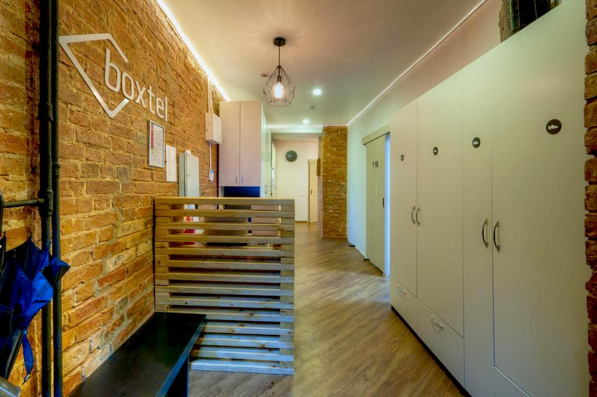
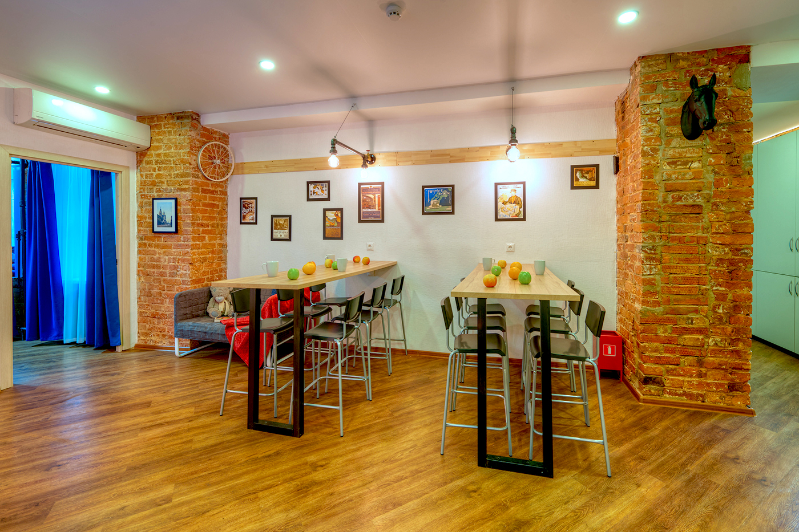
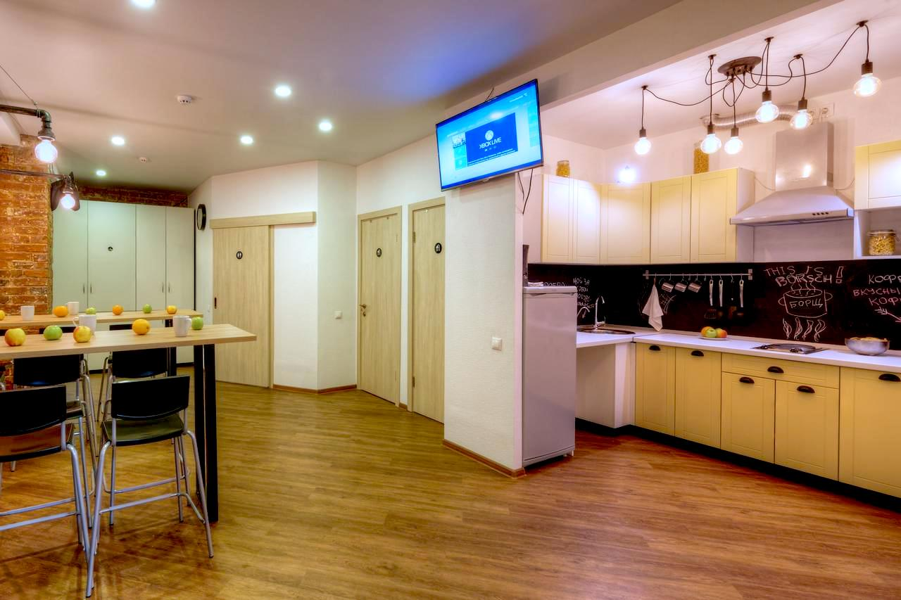
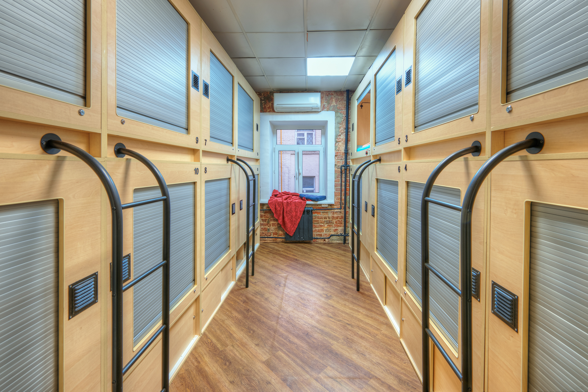
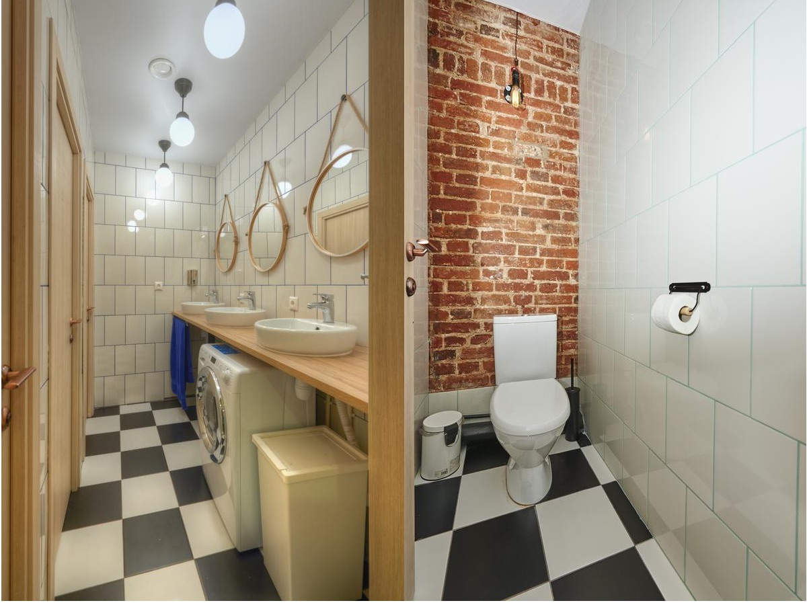
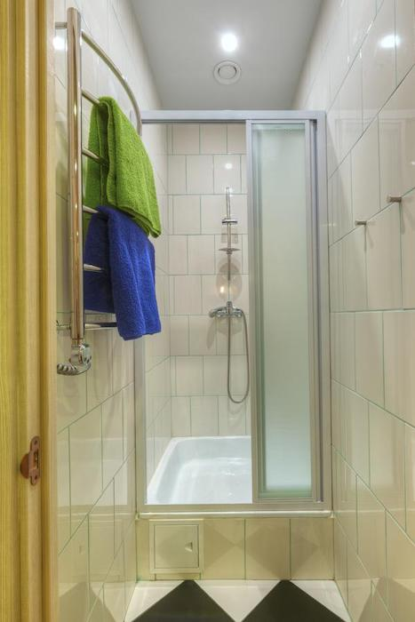
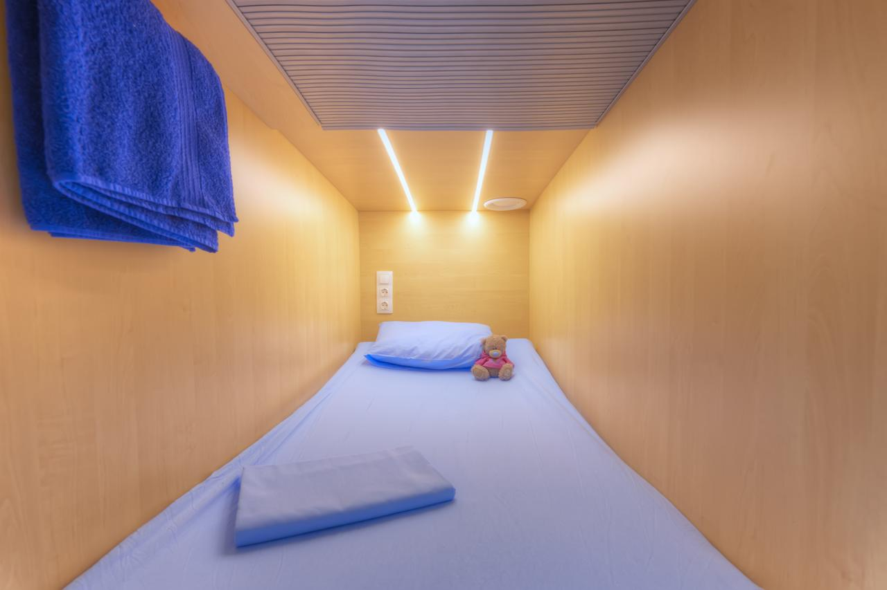

Programming, electronics, lifestyle
Наверное эта история для многих звучит шокирующее и мб носит некоторые окрасы.
Но первое – мне нравки, второе – похуй. Погнали 👇
История началась в 2017 году: я закончил университет и переехал в Москву на работу. Первый месяц я жил в съёмных апартаментах в большом доме на Беговой. Мне очень нравился вид из окна и высокая этажность, но также были и минусы: 45 тр за одну комнату и постоянно меняющиеся соседи – понятно решение временное. Затем я съехал на съёмную квартиру в Кузьминках, но жить мне там не понравилось (мне не нравился район, интерьер и общие условия жизни), закончилось моим встреванием в ремонт и ссорой с владельцем квартиры: ну а что вы хотите, когда, только что закончивший университет, никогда не живший вне дома, подросток оказывается во взрослой жизни)
Прожил я в этой квартире с сентября по декабрь, затем пришлось съезжать, да так, что чтобы увезти вещи пришлось просить отца приехать за мной на машине из Самары. Их по незнанию я очень много привез и даже купил кое-какую мебель.
Вернувшись в конце января 2018 в Москву, первую неделю я прожил в офисе (удовольствие не из приятных, но тогда мне казалось, что другие варианты отсутствуют или сильно не выгодны). Параллельно я искал квартиру, даже ездил в какое-то сомнительное агенство и общался с риелтором, но осадок после аренды предыдущей квартиры был таков, что я изначально понимал какие условия я могу себе позволить и как это потом мне будет не нравится, что напрочь отбивало и так немногочисленные варианты.
Наконец, через неделю я понял, что если я просто не помоюсь в нормальном душе, не постираю вещи в машинке и не посплю на кровати - так больше продолжаться просто не может. Я нашел капсульный хостел на пересечении Нового Арбата с Садовым кольцом. Уже вечером, сидя в вагоне метро, я открыл Push уведомление Booking'а, где был предложен другой капсульный хостел в начале Нового и Старого Арбата (что было удобнее с точки зрения транспорта), а также мне намного больше понравился интерьер и плотные жалюзи из пластика вместо штор. Кстати цена по которой, я тогда забучил хостел была ≈330₽/ночь, что вообще что-то сумасшедшее. Так я забучил первые три ночи.
Сам хостел находится на 4 этаже старого дома в уютном дворике зажатым Новым и Старым Арбатом. Внутри очень прилично, всегда чисто и хорошо. Хостел состоит из двух комнат с капсулами, одна на входе, вторая в самом дальнем конце, также есть общая кухня, 2 душевые и 3 туалета.

Главный коридор. Кстати справа витрина небольшого магазина с вкусняшками, а слева есть холодильник с газировкой (на фотке из интернета отсутствует).


Как видно тут вполне можно готовить самостоятельно, но я этим не грешу. Питался исключительно в столовых, ресторанах, кафе, а одно время даже заказывал готовое питание.

Комната слева от входа, собственно в ней я и жил, она мне как-то сразу понравилась.



Боязни замкнутого пространства у меня нет, и благодаря плотным жалюзи в капсуле я чувствовал себя вполне уверено и защищено. Также в хостеле есть даже двухместные капсулы, что на мой взгляд прикольно.
Конечно, обычный хостел корректно сравнивать с отелем или апартаментами ввиду короткого времени проживания и целей. Но в моем случае считаю это сравнение некорректным ввиду выбора хостела в качестве постоянного места жительства (да простите меня за ассоциации, что я вызвал в вас этой фразой).
Надо также понимать мой бюджет, психологическая планка стоимости месяца проживания у меня была до 30 тр. Соответственно, отель мне бы не подошел (тем более с подобным расположением) поэтому считаю корректным делать сравнение со съемной квартирой.
Залоги в Москве они на мой взгляд дикие: иногда плата наперед за 2 месяца + залог за сохранность имущества, и это зачастую не возвращается, а ну и оплата риэлтерских услуг с конским ценником по причине того, что собственник болван, а я должен платить. На предыдущей квартире у меня это составило 30+30+30+16тр - разовый платёж, как Вам?
Цены на квартиры / месторасположение в рамках Садового цены порядка 100тр и выше. Я пол года жил, конечно не в лучшем спальном районе: но вся эта грязь и общество мне дико не нравились, каждый день я не хотел туда возвращаться. В центре же постоянно новые люди, все светится огнями и чувствуешь, что не упускаешь жизнь. Когда ночью гуляешь с друзьями, они всегда на метро или как-то, а я пешком)
Без права на паузу. Жить в квартире значит платить вне зависимости от того живешь ты там или нет (у меня в среднем командировки или путешествия 1-2 неделя в месяц) - то-есть 30-50% времени я не живу дома. В капсуле я плачу лишь за ночи (посуточно). А так как я постоянный клиент для меня еще скидка есть.
Дисциплина. Жить в капсуле очень дисциплинирует, то-есть у меня нет такого, что “проснулся и валяешься”. Сразу куда-то идешь, либо в офис, если хочешь поработать, либо встречаться с друзьями, либо спортзал, либо покушать. то-есть по сути в хостеле пользовался лишь тем, что принимал душ спал и стирал вещи.
У меня был разговор с другом, который сказал интересную вещь: когда у тебя есть комфортное пространство, где можно потупить, ты тупишь, а если его нет – нет.
У меня сильно поменялось времяпрепровождение. Не помню когда я мог бы пролежать в коробке от холодильника просто так день 😂
Обязательства. Я не определился где хочу жить и не хочу к чему-то привязываться, не хочу чувствовать какие-то долговые отношения (вроде аренды квартиры и наличия кучи вещей) могут тянуть меня за собой и брать в обязательства. Тут же полная свобода, хочешь - в тот же день сменил место.
А еще я сократил все свои вещи до рюкзака и одной сумки на работе (из которой я иногда меняю вещи). Это очень круто в том плане, что допустим ты вышел из хостела и уехал в другой город или даже страну и у тебя все с собой). Конечно это отдельная религия, на которую я подсел, на эту тему есть интересный материал Афиши).
Интересные люди. Прикольно, что периодически в хостеле появлялись иностранцы, так я познакомился с моим другом Тони (из Португалии). За это отдельный зачёт.
Уборка. Ну и бонусом, тут все убирают, меняют постельное белье, выносят мусор - мне не надо об этом заботиться. В принципе не помню когда меня это и заботило)
Конечно, нужно понимать, что такая жизнь подойдет далеко не всем. И точно не для «совместной жизни» с девушкой, тк у них свой «туалет» и вообще. Однако мне на некоторый промежуток моей жизни это было очень удобно.
Стоимость такого жилья – порядка 20 тр / мес (если ночевать каждую ночь). Ввиду этого, других плюсов и моего опыта длинной в 2 года считаю теорию жизни в подобном месте работоспособной.